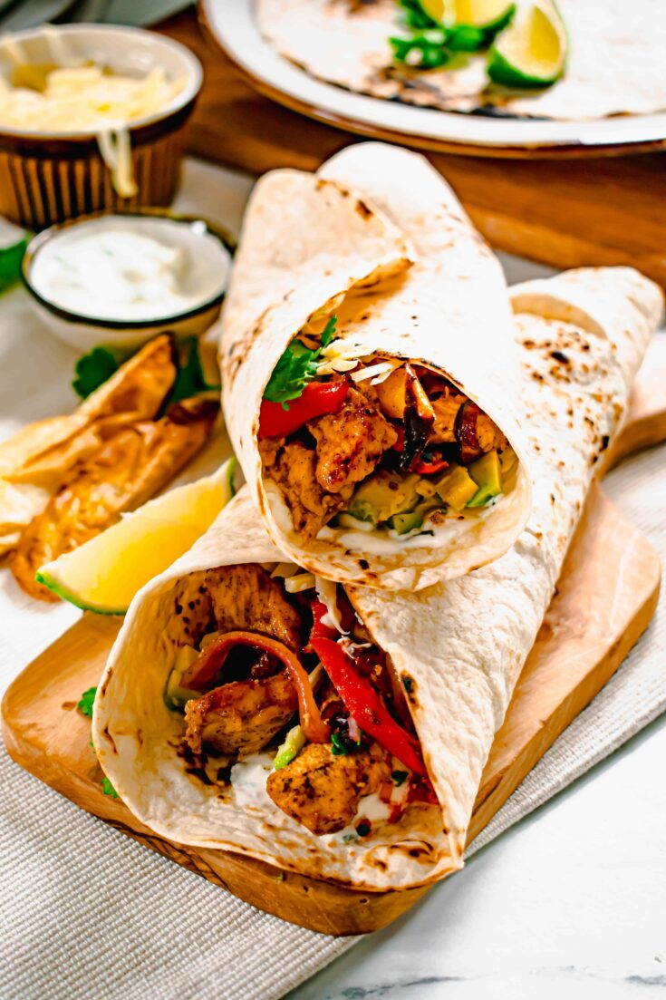
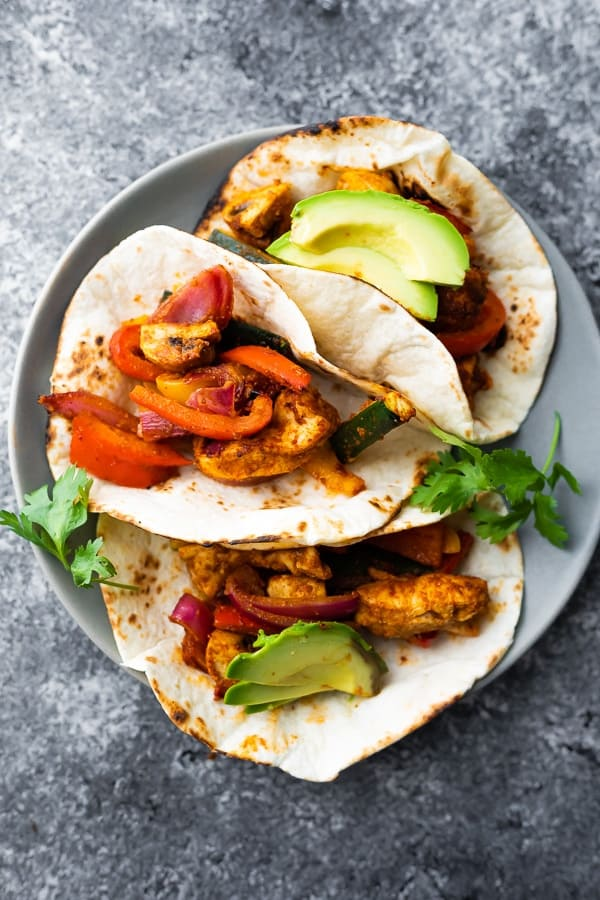

Chicken Fajitas

Description
Steak might get most of the sizzle when it comes to the subject of fajitas, but the world's poultry fans love the chicken version of this crazy popular dish. Like its beefy cousin, chicken fajitas are extra magical if you follow a few simple rules. We're breaking it down, and also including plenty of our top-rated chicken fajita recipes.
Ingredients

- cooking spray
- 2 red bell peppers, sliced
- 1 large onion, sliced
- 2 pounds skinless, boneless chicken breasts, cut into thin strips
- 1 (1 ounce) package fajita seasoning mix, divided
2 tablespoons vegetable oil, divided
- 8 (6 inch) flour tortillas
- ½ cup sour cream, or to taste
- ½ cup salsa, or to taste
- ½ cup chopped fresh cilantro, or to taste
Steps

- Preheat oven to 400 degrees F (200 degrees C). Spray a 9x13-inch glass baking dish with cooking spray.
- Spread red bell peppers and onion in the baking dish.
- Coat chicken strips with a few pinches of the fajita seasoning mix. Heat 2 teaspoons vegetable oil in a skillet over medium heat; cook and stir seasoned chicken until browned, about 2 minutes per side.
- Place chicken in the baking dish with bell peppers and onion; top with remaining fajita seasoning mix and vegetable oil. Stir until chicken and vegetables are evenly coated.
- Bake in the preheated oven, stirring halfway through baking, until chicken is no longer pink in the center, about 30 minutes.
- Spoon chicken mixture into each tortilla and top with sour cream, salsa, and cilantro.
- Enjoy!